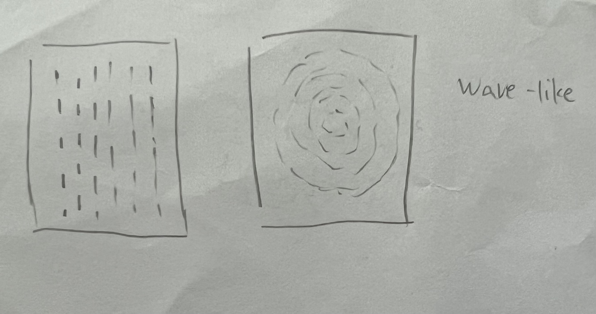

For my initial sketch, I created a grid of small squares inspired by early computer-generated patterns. I wanted the repeated shapes to feel less static, so I changed their sizes to create a wave moving across the composition. The mouse also affects the pattern, making the wave and the differences between the squares more visible. In the p5.Polar version, I kept the same square and wave concept but transformed the rectangular grid into a circular composition. The squares are arranged in multiple rings, and their changing sizes create waves that move around the center. This process changed the work from a structured grid into a more organic and radial pattern.
